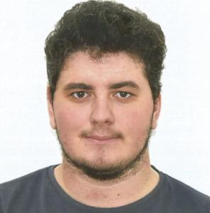

Daniel Saura Martínez
- 657 64 62 14
-
danielsauramartinez50
@gmail.com - 03009, Alicante - España
- 5 de Marzo de 1997
Idiomas
- Español Nativo
- Ingés Básico
Datos de interés
- Permiso de conducir B